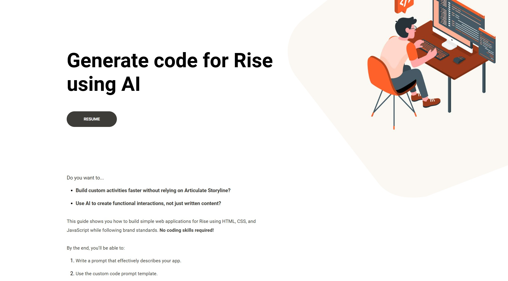
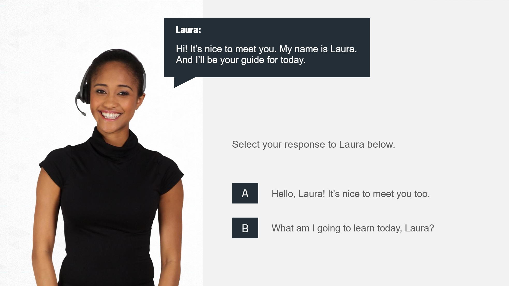
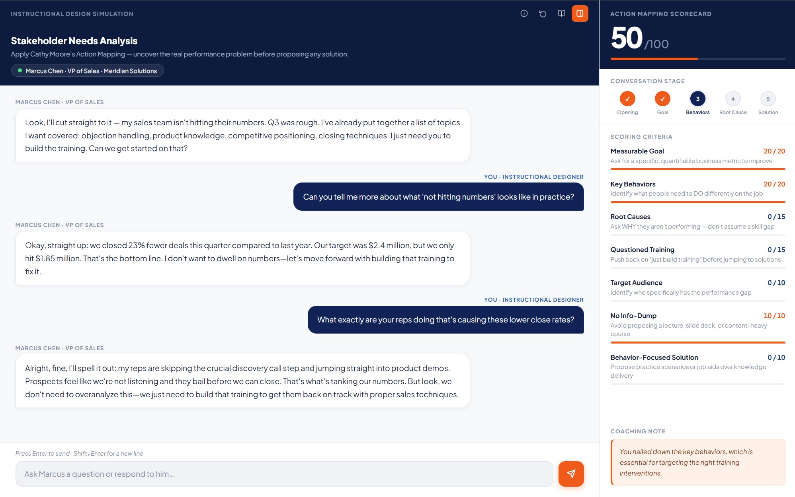
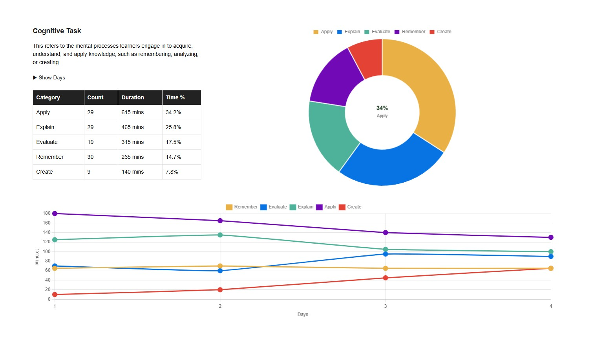

Portfolio
Sr. Instructional Designer
The goal is simple: help people do their jobs competently and confidently. I work with organizations to identify performance gaps and build learning experiences with measurable results.
01
Even when agents know the right words, their tone can still sound tired, flat, or sarcastic. This short video uses a relatable call scenario to teach three practical behaviors: smiling, matching tone to the situation, and speaking with confidence. It enables customer service representatives to sound more sincere and credible during difficult calls.
Video · Vyond
02
Building custom interactions for Articulate Rise can take too long. This guide shows instructional designers how to use AI to generate interactive components for Rise with HTML, CSS, and JavaScript that follow brand standards. Designed as a reusable reference, it speeds up development without requiring Storyline for every advanced build.
Guide · Articulate Rise / AI
View Project
03
This module helps experienced call center agents handle frustrated customers with more consistency. Using guided discovery, optional review, and scenario-based practice, it teaches learners how to apply acknowledgement, empathy, and assurance statements in realistic conversations. The result is stronger de-escalation and better customer interactions.
Note: This is an unbranded rebuild created for an instructor-led Articulate Storyline walkthrough.
E-Learning · Articulate Storyline
View Project
04
Instructional designers often jump straight to solutions before fully understanding the performance problem. This simulation puts designers in a realistic stakeholder meeting where they must apply Cathy Moore's Action Mapping framework to uncover the real issue before proposing any intervention. It builds the habit of asking better questions, challenging training requests, and tying solutions to measurable business goals.
Simulation · Node.js / AI
View Project
05
Evaluating a training design can be difficult when the structure is not easy to see. This app allows learning professionals and stakeholders to visualize the mix of activities, methods, and delivery choices in a learning solution. It supports better design decisions by making gaps and imbalances easier to spot early.
To try it, download the test curriculum and upload it to the app. For a walkthrough, open the app and go to File > Guide.
App · HTML / CSS / JavaScript
